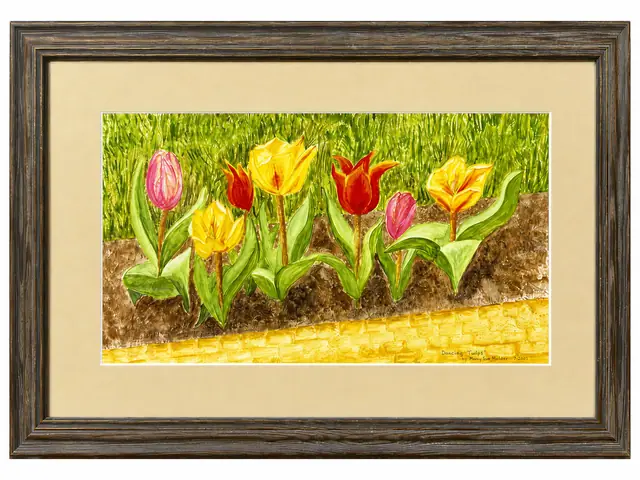
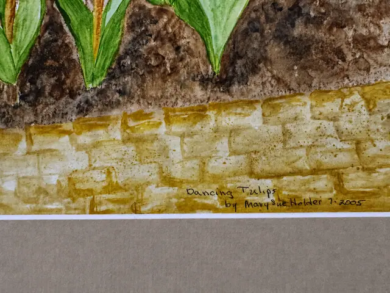

Paintings & Prints
'Dancing Tulips' Embossed Watercolour, Signed and Dated 2005, Grey Frame
Mary Sue Ha…ter · 2005
Price Upon Request


About the Item
'Dancing Tulips', embossed watercolour of tulips against a stone wall, inscribed with the title, artist and date 7-2005 within the image. Framed in a grey wood moulding with mat under glass.
Details
- Creator:
- Mary Sue Ha…ter
- Creation Year:
- 2005
- Dimensions:
- Height: 13.5 in (34.29 cm)
Width: 19.5 in (49.53 cm)
outside of frame - Period:
- 21St
- Condition:
- Offered in the condition shown in the photographs.
- Reference Number:
- VO-18